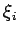

Inhalt Index DeskTop Bronstein

 Integralrechnung Bestimmte Integrale Uneigentliche Integrale, Stieltjes- und Lebesgue-Integrale
Integralrechnung Bestimmte Integrale Uneigentliche Integrale, Stieltjes- und Lebesgue-Integrale


Der Begriff des bestimmten Integrals ist als RIEMANN-Integral unter der Voraussetzung einer beschränkten Funktion f(x) und eines abgeschlossenen Integrationsintervalls [a,b] eingeführt worden. Diese beiden Voraussetzungen waren Ansatzpunkte für Verallgemeinerungen des RIEMANNschen Integralbegriffs. Im Folgenden werden einige genannt.
gebildet. Wenn der Grenzwert von (8.76) für den Fall, daß die Länge der Elementarintervalle gegen Null strebt, existiert und zwar unabhängig von der Wahl der Punkte xi und , dann wird dieser Grenzwert als bestimmtes STIELTJES- Integral bezeichnet (s. Lit. 8.14, 8.19).
| Beispiel |
|
Für g(x)=x geht das STIELTJES-Integral in das RIEMANN-Integral über. |
Die Bezeichnungen für die Verallgemeinerungen des Integralbegriffs sind nicht einheitlich
(s. Lit. 8.14).